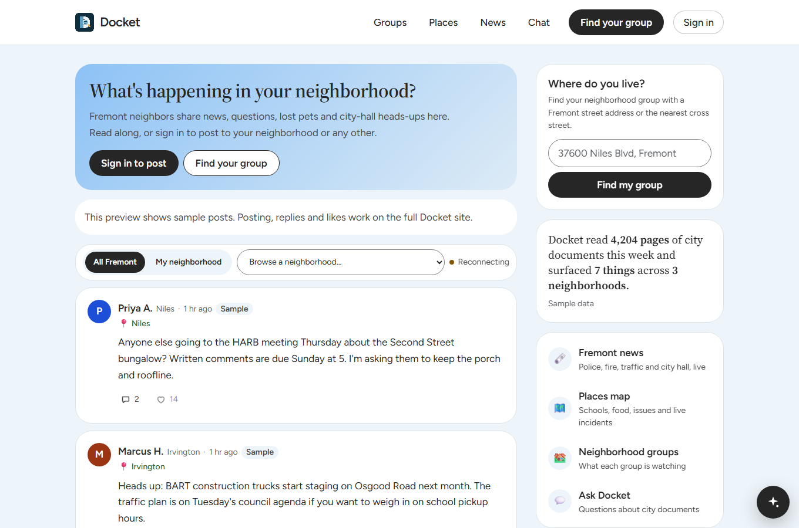
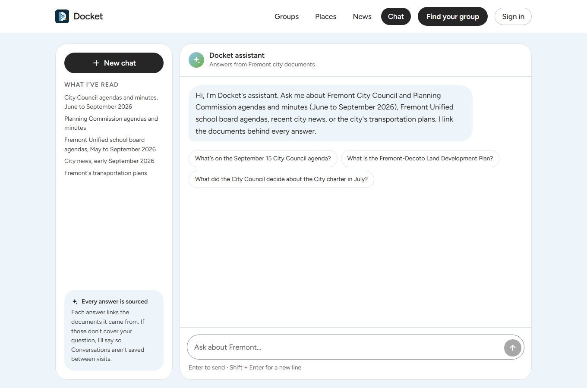
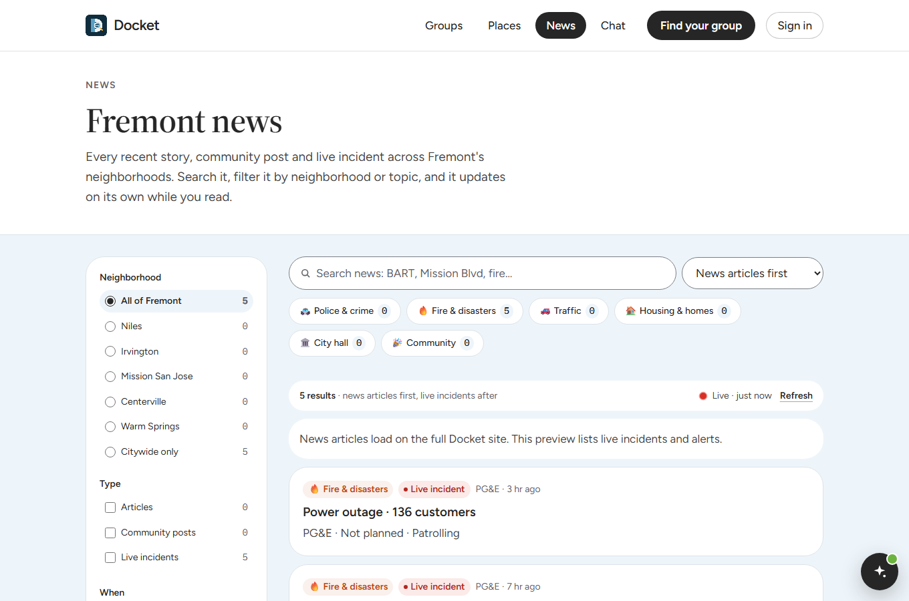
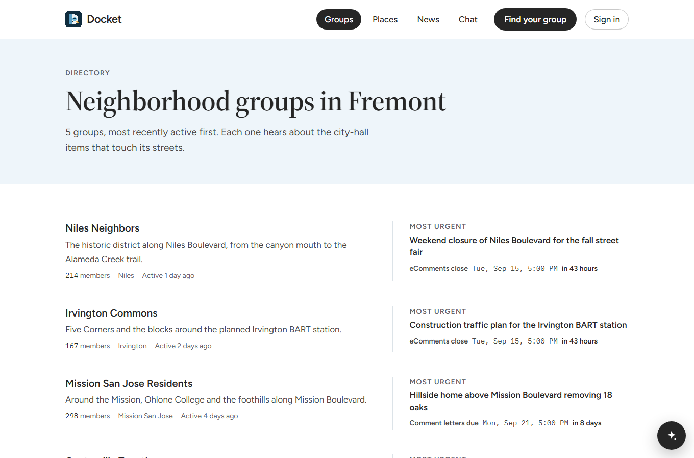

Builder story
How Docket reads city hall so your block doesn't have to
We built a neighborhood app for Fremont with an AI helper that reads meeting agendas, minutes and school board notes, then tells neighbors what's coming up. Every fact it shares links back to the page it came from.
Item 1
Keeping up with your own street is a part-time job
Decisions that change a neighborhood are public. A new apartment building, a rezoned lot, a road that will close for months. The trouble is where they live: inside agenda packets that can run hundreds of pages, meeting minutes posted weeks later, and city websites that each work differently.
Everything else is scattered too. Road closures sit on a state traffic feed. Earthquake and fire alerts are on federal and state sites. Local news is spread across several outlets, and neighbors talk in group chats that half the street isn't in.
Most people only hear about a change after the meeting where they could have spoken up.
That's not because people don't care. It's because nobody has time to read city hall every week.
Item 2
Let an agent do the reading, and make it show its work
AI is good at reading a lot of text quickly. It's also known for making things up, and a made-up council vote or wrong deadline is worse than no answer at all. So we started from one rule:
If Docket can't point to the exact page, it doesn't say it.
From there the idea was simple. Put the whole neighborhood in one place: neighbors talking, local news, live alerts, nearby places. Then add a helper that quietly reads the public record in the background and turns it into short, plain updates, each with numbered links to the source. When the sources don't cover a question, it says so instead of guessing.
We picked Fremont, California because it's a real city with 32 official neighborhoods, a busy planning department, and public records spread across several different websites. If it works there, the approach can work for other cities.
Without Docket
- Check city, news and alert sites one by one
- Dig through a long agenda packet for one item
- Hear about the rezoning after the fact
With Docket
- One feed for your neighbors and your area
- Plain summaries with links, before the deadline
- See how neighbors feel and add your voice
Item 3
A neighborhood app with a helper that reads the fine print
Docket looks and feels like a friendly social app. You type your address, it finds which of Fremont's 32 neighborhoods you live in, create an account, and you're in.
- Neighborhood feedhome page
- Post to your neighborhood or all of Fremont. Add up to four photos or a short video, links and emoji. Reply, like, and see new posts show up as neighbors write them.
- Ask Docketon every page
- A chat bubble that answers questions about Fremont in plain words, with numbered links to the city documents behind each answer. It knows what you're looking at, so you can open a news story and just ask "what does this mean for me?"
- Local issues and votesgroup pages
- Upcoming agenda items for your area, each with a short summary, pros and cons (marked as either straight from the source or an inference), the comment deadline, and a poll showing how neighbors feel. Polls are clearly labelled as neighbor opinion, never as official votes.
- Fremont newsnews page
- Stories about city hall, police, fire, housing and traffic, filtered by neighborhood and topic. It drops stories about the other towns named Niles, Centerville and Warm Springs, which turned out to be a real problem.
- Live nowplaces map
- Highway patrol calls, lane closures, earthquakes, wildfires, power outages and weather alerts near Fremont, refreshed every minute and pinned on a map next to schools, parks and shops.
- Safe to shareeverywhere
- Posts and reviews go through a word filter that catches tricks like "s*x" or "4uck" without blocking normal phrases like "sex offender registry". Photos and videos are checked for what they show before any neighbor can see them.
What happens behind the scenes
Docket has two AI agents, each running on its own:
- The reader wakes up on a schedule (daily, weekly or monthly, depending on the source). It visits the city's meeting portal, the council and planning commission pages, the school board site, the city's resident reports and the state legislature's daily files. It follows each site's rules for bots, saves the documents, and breaks them into small searchable pieces.
- The answerer handles chat. When you ask a question, it searches those pieces, writes an answer using only what it found, and attaches a numbered link for each fact.
Before anything is shown, plain code (not the AI) checks that every dollar amount, date, address and record number in the answer appears word for word in the page it cites. If a fact can't be found there, it's removed.

Item 4
How we used AWS, and why
We had two goals: keep every AWS key off people's browsers, and keep the monthly bill to a few dollars. That pushed us toward services that cost nothing when nobody is using them.
-
Amazon Bedrock AgentCoreruns both agentsHosts the reader and the answerer as two separate services, each with only the permissions it needs. Why: we didn't want to run servers ourselves, and we wanted chat answers to stream in word by word.
-
Amazon Bedrockthe AI modelsThe
gpt-oss-120bmodel writes answers and checks claims. Titan Text Embeddings turns each piece of a document into numbers so we can search by meaning, not just exact words. Why: pay per use, no model hosting. -
Strands Agentsopen-source agent toolkitHow we wrote the agents: search tools, the step-by-step read, write and check flow, and chat. Why: it deploys straight to AgentCore.
-
Aurora DSQLthe databaseHolds posts, votes, reviews, neighborhoods, the documents the reader saved, and chat history. Why: it's a regular SQL database that scales down to almost nothing when idle.
-
Amazon S3 Vectorssearch by meaningStores those "meaning" numbers so the answerer can find the right paragraph even when you use different words than the city did. Why: much cheaper than running a separate search database.
-
Amazon S3filesKeeps original PDFs and web pages, plus neighbors' photos and videos in a private bucket. Photos are shown through links that expire. Why: we can always go back to the original document.
-
Docket accountssign-inStores scrypt password hashes and signs HTTP-only sessions. Why: a straightforward account flow with passwords never stored in plaintext.
-
Amazon Rekognitionphoto and video checksLooks at every uploaded photo and video for explicit, violent or hateful content, and reads any words inside a picture. If a file can't be checked, it isn't shown. Why: a neighborhood app has to be safe for everyone on the street.
-
EventBridge Scheduleralarm clockWakes the reader every day, every Monday and on the 1st of each month. Why: no always-on machine just to start a job.
-
Secrets Manager, IAM, CDKthe plumbingKeeps our web-scraping key out of the code, gives each piece the smallest set of permissions, and sets up the agent services from code.
-
AWS Amplify Hostingthe websiteBuilds and serves the Next.js website. The site's server talks to the database and the chat agent with its own AWS role, so no keys ever reach a browser.
Item 5
What went wrong, and how we fixed it
Plenty. Here are the ones that taught us the most.
We ran out of free database space in the middle of the build
- Problem
- Our first database was on a free plan, and we hit its limit partway through the hackathon.
- Fix
- We moved everything to AWS in about a day: Aurora DSQL for data and S3 Vectors for search. The new database doesn't support some features we'd planned on, like built-in search add-ons and automatic rules, so we moved search to S3 Vectors plus a simple keyword search in our own code, and enforced rules like "vote before you review" in the app itself.
City websites blocked our reader
- Problem
- We wanted our bot to politely introduce itself by name. The bot firewalls on the city site, the meeting portal and the school board site rejected it every time.
- Fix
- On those three sites only, we let our fetching service use its normal identity. We still follow every site's rules for bots, wait between requests, and never use tricks to hide who we are.
The AI sometimes cited the wrong page
- Problem
- Early answers were mostly right but occasionally pointed a fact at the wrong document, tacked on an extra link that didn't support the sentence, or leaked its own notes like "We must cite evidence 1".
- Fix
- We stopped trusting the AI to check itself. Code now requires every number, date and address to appear word for word in the cited page, drops links that support nothing in their sentence, and strips out the model's planning notes. If nothing survives, it tries once more, then says it doesn't know.
A 7 PM meeting showed up as the next day
- Problem
- Dates were saved in universal time, so an evening meeting in California rolled over to tomorrow. For a deadline, that's a real mistake.
- Fix
- Every date shown to a neighbor, including dates on source links, is now converted to Fremont time.
Our AWS account lost access to AI models
- Problem
- The model we first wanted wasn't available to our account. Later, every model call in the account started failing because of an account-level hold we couldn't fix from code.
- Fix
- We built on
gpt-oss-120b, which was available. When the hold hit, a teammate's AWS account gave our two agents a narrowly scoped role that allows model calls only, so chat kept working while we sorted out billing.
Some photos couldn't be checked
- Problem
- The photo checker can't read WebP or GIF files, and some videos failed to process. We also found people can rename a web page to look like a picture.
- Fix
- The app converts WebP and GIF to JPEG in the browser before upload, reads the first bytes of every file to confirm it really is what it claims, and hides anything that can't be checked. Safe by default.
Item 6
What we ended up with
Both agents are live on Bedrock AgentCore, reading real Fremont records on a schedule. To see whether the answers can be trusted, we wrote 20 questions with known answers from real city documents, plus 5 questions our sources can't answer.
From our groundedness test run with gpt-oss-120b and Titan Text Embeddings.
Which site did the City Council rezone from Regional Commercial to Tech Industrial in July 2026?
The City Council rezoned the 11.21-acre site at 43800 Osgood Road from Regional Commercial (C-R) to Tech Industrial (I-T) in July 2026 [1].
What is the population of Fremont, California?
I don't have anything in my sources about that.
That second answer is one of our favorites. The model almost certainly "knows" a population figure, but Docket's sources are city records, not census data. It didn't guess.
What makes it interesting
- It would rather say nothing than be wrong. Trust is the whole product. A neighborhood app that invents a deadline does real harm.
- The AI is a quiet helper, not the headline. People come for their neighbors, news and alerts. The agent works in the background and speaks up when it has something it can back up.
- It's cheap to run. Everything scales down when no one is using it. We sized the database, search and sign-in to cost about a dollar or two a month at our scale.
- It's a good neighbor to the websites it reads. It follows their rules for bots, waits between visits, and keeps the original files so anyone can check.
Item 7
See it for yourself
- Live previewk1lst1x.github.io/DOCKET
- Source codegithub.com/k1lst1x/DOCKET
Try asking Docket: "What's on the September 15 City Council agenda?" or "What did the City Council decide about the City charter in July?"



Item 8
What we'd do next
- Open sign-in to everyone. Our email service is still in AWS's test mode, so sign-in codes only reach approved addresses. We need a proper sending domain and production access.
- Finish the move to AWS Amplify. Hook up the production site to the chat agent, photo uploads and photo checks, and retire the static preview.
- Replace the last sample data. Issues now come from real agendas. Next are the groups and stats that still use examples.
- Better address matching. The free address lookup we use misses some Fremont addresses. We'd match addresses directly against the city's own neighborhood map.
- State bills that matter locally. The reader already pulls the legislature's daily files, but hasn't matched a Fremont bill yet. We want to show bills written by Fremont's own representatives.
- Heads-up alerts. A short email or phone notification when something is about to be decided on your street, while there's still time to comment.
- More cities. Nothing in the design is special to Fremont except the list of sources. Adding a new city should mostly mean adding its websites.